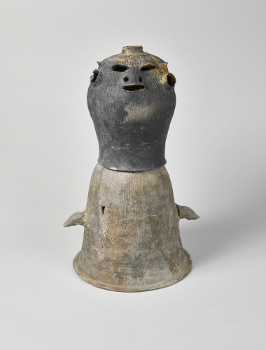

흙으로 만드는 나만의 이야기
내 얼굴토기
말랑한 흙에 상상을 담아
나만의 얼굴을 만들어 볼까요?
흙 빚기·얼굴 만들기·다시 발견하기

시루 위에 얹은 모습은 추정 복원이에요.
손끝으로 빚는 작은 박물관
지금 하는 일
360° 돌려 보기
흙에서 나만의 작품까지
세상에 하나뿐인
내 얼굴토기!
내가 만든 얼굴과 구멍을
다시 천천히 살펴봐요.
나만의 작품 손가락으로 돌려 보세요
흙으로 만드는 나만의 이야기
말랑한 흙에 상상을 담아
나만의 얼굴을 만들어 볼까요?

손끝으로 빚는 작은 박물관
흙에서 나만의 작품까지
내가 만든 얼굴과 구멍을
다시 천천히 살펴봐요.
나만의 작품 손가락으로 돌려 보세요